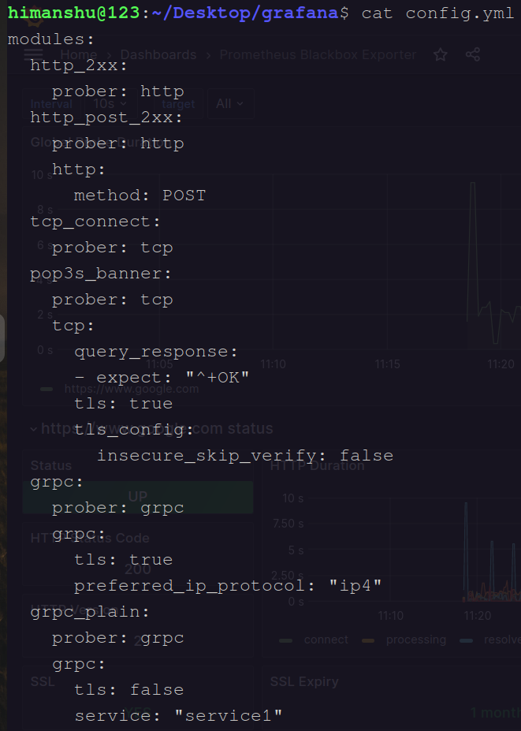
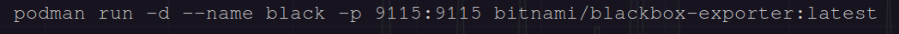
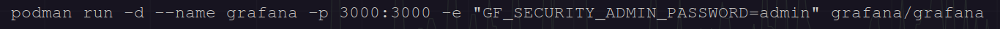
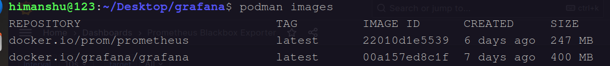
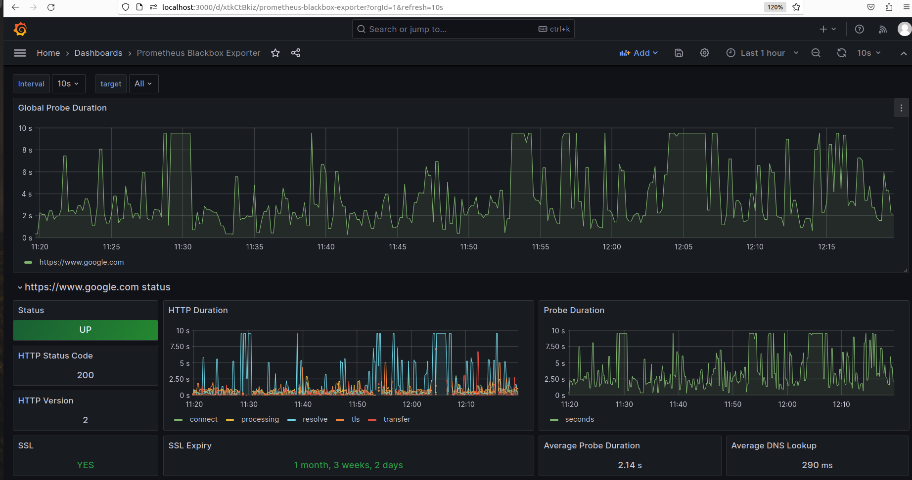
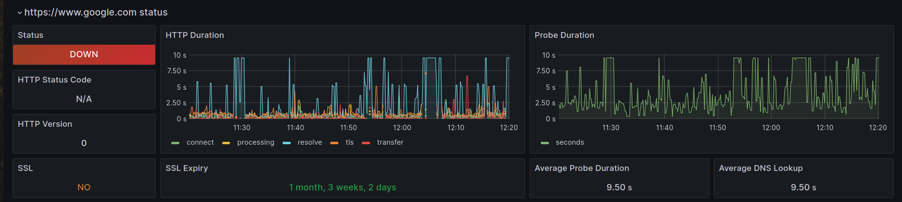

1 - Definition of Grafana , Prometheus and Blackbox Exporter
2 - How to set up Grafana , Prometheus and Blackbox Exporter on Podman Container ?
Distributor ID: Ubuntu Description: Ubuntu 22.04.3 LTS Release: 22.04 Codename: jammy
podman version 3.4.4
sudo apt update
sudo apt upgrade
mkdir grafana
cd grafana
touch prometheus.yml
touch config.yml
ls : Check List

vim prometheus.ymlPaste code in this configuration file .
global:
scrape_interval: 15s
scrape_timeout: 10s
evaluation_interval: 15s
scrape_configs:
- job_name: 'prometheus'
scrape_interval: 5s
static_configs:
- targets: ['192.168.1.113:9090', '192.168.1.113:9115']
- job_name: 'blackbox'
metrics_path: /probe
params:
module: [http_2xx]
static_configs:
- targets:
- https://www.google.com
relabel_configs:
- source_labels: [__address__]
target_label: __param_target
- source_labels: [__param_target]
target_label: instance
- target_label: __address__
replacement: 192.168.1.113:9115

vim config.ymlPaste code in this configuration file .
modules:
http_2xx:
prober: http
http_post_2xx:
prober: http
http:
method: POST
tcp_connect:
prober: tcp
pop3s_banner:
prober: tcp
tcp:
query_response:
- expect: "^+OK"
tls: true
tls_config:
insecure_skip_verify: false
grpc:
prober: grpc
grpc:
tls: true
preferred_ip_protocol: "ip4"
grpc_plain:
prober: grpc
grpc:
tls: false
service: "service1"
ssh_banner:
prober: tcp
tcp:
query_response:
- expect: "^SSH-2.0-"
- send: "SSH-2.0-blackbox-ssh-check"
irc_banner:
prober: tcp
tcp:
query_response:
- send: "NICK prober"
- send: "USER prober prober prober :prober"
- expect: "PING :([^ ]+)"
send: "PONG ${1}"
- expect: "^:[^ ]+ 001"
icmp:
prober: icmp
icmp_ttl5:
prober: icmp
timeout: 5s
icmp:
ttl: 5


podman run -p 9090:9090 -v /home/himanshu/Desktop/grafana/prometheus.yml:/etc/prometheus/prometheus.yml /prom/prometheus
podman run: This is the basic command to run a container using Podman. Podman is a container management tool similar to Docker.
-p 9090:9090: This part of the command specifies port mapping. It maps port 9090 from the container to port 9090 on the host. This is typically done to allow external access to the service running inside the container on port 9090.
-v /home/himanshu/Desktop/grafana/prometheus.yml:/etc/prometheus/prometheus.yml: This part specifies a volume mount. It takes a file from the host system and mounts it into the container. In this case, it's taking the file located at /home/himanshu/Desktop/grafana/prometheus.yml on the host and mounting it into the container at /etc/prometheus/prometheus.yml. This is often used for configuration files, so the Prometheus configuration can be customized.
/prom/prometheus: This is the name of the container image that you want to run. In this case, it seems to be referring to a container image named "prom/prometheus," which is likely an official Prometheus container image.
podman images : check images .

podman ps : check container .

podman run -d --name black -p 9115:9115 bitnami/blackbox-exporter:latest
podman run: This is the basic command for running a container with Podman.
-d: This flag stands for "detached" mode, which means that the container will run in the background, and you'll get your terminal prompt back immediately.
--name black: This flag assigns a name "black" to the running container, allowing you to easily reference it by name instead of a container ID.
-p 9115:9115: This flag maps ports between the host and the container. In this case, it's mapping port 9115 on the host to port 9115 in the container. This is useful if the container is running a service that you want to access from your host machine.
bitnami/blackbox-exporter:latest: This is the name of the Docker image that you want to run as a container. It's specifying the image "bitnami/blackbox-exporter" with the "latest" tag, meaning the latest available version of that image.
podman images : check images .

podman ps : check container .

podman run -d --name grafana -p 3000:3000 -e "GF_SECURITY_ADMIN_PASSWORD=admin" grafana/grafana
podman run: This is the command to run a container using Podman, a containerization tool similar to Docker.
-d: This flag stands for "detached" mode, which means that the container will run in the background as a daemon.
--name grafana: This flag assigns a name to the container, in this case, "grafana." This name can be used to reference and manage the container.
-p 3000:3000: This flag is used to map ports between the host machine and the container. It specifies that port 3000 on the host should be mapped to port 3000 inside the Grafana container. This is important for accessing Grafana's web interface, as the Grafana server runs on port 3000 by default.
-e "GF_SECURITY_ADMIN_PASSWORD=admin": This flag is used to set an environment variable within the container. In this case, it's setting the Grafana admin user's password to "admin." This is a common initial setup step to secure your Grafana instance.
grafana/grafana: This is the name of the Docker image that you want to run. It specifies that you want to run the official Grafana Docker image from the "grafana" repository on Docker Hub.
podman images : check images .

podman ps : check container .



